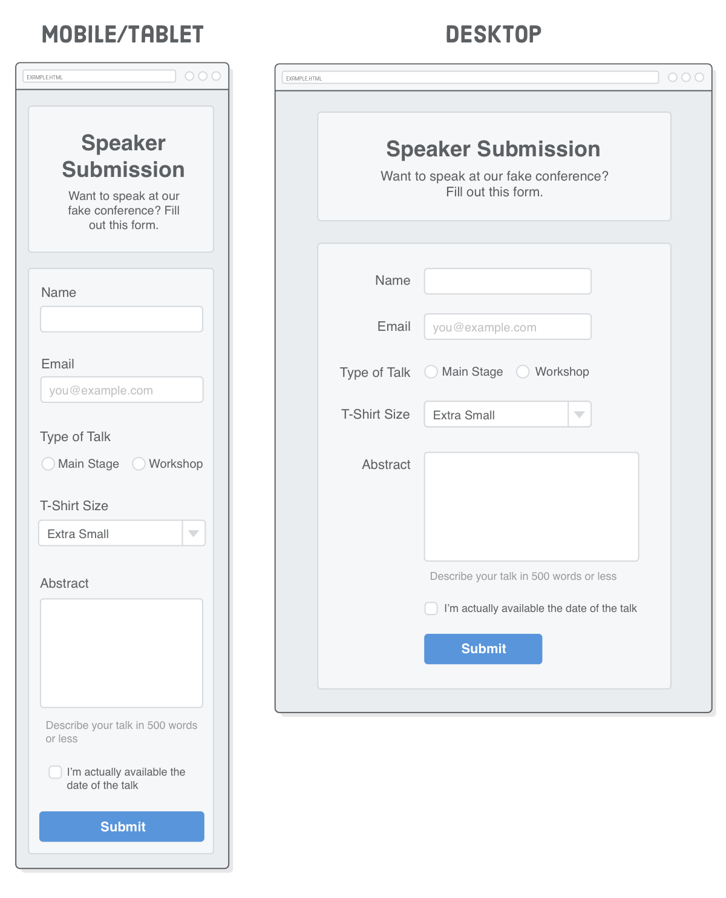
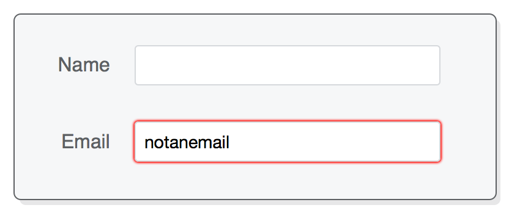
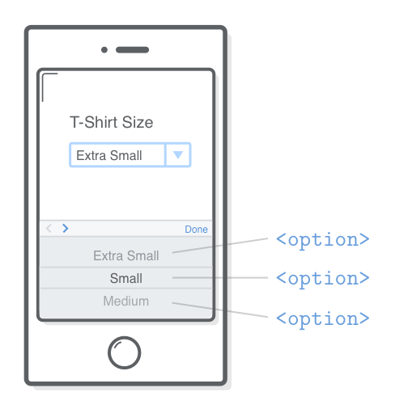

A friendly web development tutorial for capturing user input
HTML form elements let you collect input from your website’s visitors.
Mailing lists, contact forms, and blog post comments are common examples for
small websites, but in organizations that rely on their website for revenue,
forms are sacred and revered.
Forms are the “money pages.” They’re how e-commerce sites
sell their products, how SaaS companies collect payment for their service, and
how non-profit groups raise money online. Many companies measure the success of
their website by the effectiveness of its forms because they answer questions
like “how many leads did our website send to our sales team?” and
“how many people signed up for our product last week?” This often
means that forms are subjected to endless A/B tests and optimizations.
There are two aspects of a functional HTML form: the frontend user interface
and the backend server. The former is the appearance of the form (as
defined by HTML and CSS), while the latter is the code that processes it
(storing data in a database, sending an email, etc). We’ll be focusing
entirely on the frontend this chapter, leaving backend form processing for a
future tutorial.
SETUP
Unfortunately, there’s really no getting around that fact that styling
forms is hard. It’s always a good idea to have a mockup
representing the exact page you want to build before you start coding it up,
but this is particularly true for forms. So, here’s the example
we’ll be creating in this chapter:

As you can see, this is a speaker submission form for a fake conference. It
hosts a pretty good selection of HTML forms elements: various types of text
fields, a group of radio buttons, a dropdown menu, a checkbox, and a submit button.
Create a new Atom
project called forms and stick a new HTML file in it called
speaker-submission.html. For starters, let’s add the markup
for the header. (Hey look! It has some semantic HTML!)
<!DOCTYPE html><htmllang='en'><head><metacharset='UTF-8'/><title>Speaker Submission</title><linkrel='stylesheet'href='styles.css'/></head><body><headerclass='speaker-form-header'><h1>Speaker Submission</h1><p><em>Want to speak at our fake conference? Fill out
this form.</em></p></header></body></html>
Next, create a styles.css file and add the following CSS. It
uses a simple flexbox technique to center
the header (and form) no matter how wide the browser window is:
Notice that we’re adhering to the mobile-first
development approach that we discussed in the Responsive Design
chapter. These base CSS rules give us our mobile layout and provide a
foundation for the desktop layout, too. We’ll create the media query for
a fixed-width desktop layout later in the chapter.
HTML FORMS
On to forms! Every HTML form begins with the aptly named
<form> element. It accepts a number of
attributes, but the most important ones are action and
method. Go ahead and add an empty form to our HTML document, right
under the <header>:
The action attribute defines the URL that processes the form.
It’s where the input collected by the form is sent when the user clicks
the Submit button. This is typically a special URL defined
by your web server that knows how to process the data. Common backend
technologies for processing forms include Node.js, PHP, and Ruby
on Rails, but again, we’ll be focusing on the frontend in this
chapter.
The method attribute can be either post
or get,
both of which define how the form is submitted to the backend server. This is
largely dependent on how your web server wants to handle the form, but the
general rule of thumb is to use post when you’re
changing data on the server, reserving get for when
you’re only getting data.
By leaving the action attribute blank, we’re telling the
form to submit to the same URL. Combined with the get method, this
will let us inspect the contents of the form.
Styling Forms
Of course, we’re looking at an empty form right now, but that
doesn’t mean we can’t add some styles to it like we would a
container <div>. This will turn it into a box that matches
our <header> element:
The <input/> element’s type attribute
also lets you do basic input validation. For example, let’s try adding
another input element that only accepts email addresses instead of
arbitrary text values:
This works exactly like the type='text' input, except it
automatically checks that user entered an email address. In Firefox, you can
try typing something that’s not an email address, then clicking outside
of the field to make it lose focus and validate its input. It should turn red
to show the user that it’s an incorrect value. Chrome and Safari
don’t attempt to validate until user tries to submit the form, so
we’ll see this in action later in this chapter.

This is more than just validation though. By telling browsers that
we’re looking for an email address, they can provide a more intuitive
user experience. For instance, when a smartphone browser sees this
type='email' attribute, it gives the user a special email-specific
keyboard with an easily-accessible @ character.
Also notice the new placeholder attribute that lets you display
some default text when the <input/> element is empty. This
is a nice little UX technique to prompt the user to input their own value.
There’s a bunch of other built-in validation options besides email
addresses, which you can read about on MDN’s <input/>
reference. Of particular interest are the required,
minlength, maxlength, and pattern
attributes.
Styling Email Input Fields
We want our email field to match our text field from the previous section,
so let’s add another attribute selector to the existing
input[type='text'] rule, like so:
/* Change this rule */.form-rowinput[type='text'] {
background-color: #FFFFFF;
/* ... */
}
/* To have another selector */.form-rowinput[type='text'],
.form-rowinput[type='email'] {
background-color: #FFFFFF;
/* ... */
}
Again, we don’t want to use a plain old input type
selector here because that would style all of our
<input/> elements, including our upcoming radio buttons and
checkbox. This is part of what makes styling forms tricky. Understanding the
CSS to pluck out exactly the elements you want is a crucial skill.
Let’s not forget about our desktop styles. Update the corresponding
input[type='text'] rule in our media query to match the following
(note that we’re preparing for the next few
sections with the select, and
textarea selectors):
@media only screen and (min-width: 700px) {
/* ... */.form-rowinput[type='text'],
.form-rowinput[type='email'], /* Add */.form-rowselect, /* These */.form-rowtextarea { /* Selectors */width: 250px;
height: initial;
}
/* ... */
}
Since we can now have a “right” and a “wrong” input
value, we should probably convey that to users. The :invalid and
:validpseudo-classes
let us style these states independently. For example, maybe we want to render
both the border and the text with a custom shade of red when the user entered
an unacceptable value. Add the following rule to our stylesheet, outside of the
media query:
.form-rowinput[type='text']:invalid,
.form-rowinput[type='email']:invalid {
border: 1px solid #D55C5F;
color: #D55C5F;
box-shadow: none; /* Remove default red glow in Firefox */
}
Until we include a submit button, you’ll only be able to see this in
Firefox, but you get the idea. There’s a similar pseudo-class called
:focus that selects the element the user is currently filling out.
This gives you a lot of control over the appearance of your forms.
RADIO BUTTONS
Changing the type property of the <input/>
element to radio transforms it into a radio button. Radio buttons
are a little more complex to work with than text fields because they always
operate in groups, allowing the user to choose one out of many predefined
options.
This means that we not only need a label for each
<input/> element, but also a way to group radio buttons and
label the entire group. This is what the <fieldset> and
<legend> elements are for. Every radio button group you
create should:
Be wrapped in a <fieldset>, which is labeled with a
<legend>.
Associate a <label> element with each radio button.
Use the same name attribute for each radio button in the
group.
Use different value attributes for each radio button.
Our radio button example has all of these components. Add the following to
our <form> element underneath the email field:
<fieldsetclass='legacy-form-row'><legend>Type of Talk</legend><inputid='talk-type-1'name='talk-type'type='radio'value='main-stage' /><labelfor='talk-type-1'class='radio-label'>Main Stage</label><inputid='talk-type-2'name='talk-type'type='radio'value='workshop'checked /><labelfor='talk-type-2'class='radio-label'>Workshop</label></fieldset>
Unlike text fields, the user can’t enter custom values into a radio
button, which is why each one of them needs an explicit value
attribute. This is the value that will get sent to the server when the user
submits the form. It’s also very important that each radio button has the
same name attribute, otherwise the form wouldn’t know they
were part of the same group.
We also introduced a new attribute called checked. This is a
“boolean attribute”, meaning that it never takes a value—it
either exists or doesn’t exist on an <input/> element.
If it does exist on either a radio button or a checkbox element, that element
will be selected/checked by default.
Styling Radio Buttons
We have a few things working against us with when it comes to styling radio
buttons. First, there’s simply more elements to worry about. Second, the
<fieldset> and <legend> elements have
rather ugly default styles, and there’s not a whole lot of consistency in
these defaults across browsers. Third, at the time of this writing,
<fieldset> doesn’t support flexbox.
But don’t fret! This is a good example of floats being a useful fallback for
legacy/troublesome elements. You’ll notice that we didn’t wrap the
radio buttons in our existing .form-row class, opting instead for
a new .legacy-form-row class. This is because it’s going to
be completely separate from our other elements, using floats instead of
flexbox.
Start with the mobile and tablet styles by adding the following rules
outside of our media query. We want to get rid of the default
<fieldset> and <legend> styles, then
float the radio buttons and labels so they appear in one line underneath the
<legend>:
For the desktop layout, we need to make the <legend> line
up with the <label> elements in the previous section (hence
the width: 120px line), and we need to float everything
to the left so they appear on the same line. Update our media query to include
the following:
As far as layouts go, this is a pretty good cross-browser solution. However,
customizing the appearance of the actual button is another story. It’s
possible by taking advantage of the checked attribute, but
it’s a little bit complicated. We’ll leave you to Google
“custom radio button CSS” and explore that rabbit hole on your
own.
SELECT ELEMENTS
(DROPDOWN MENUS)
Dropdown menus offer an alternative to radio buttons, as they let the user
select one out of many options. The <select> element
represents the dropdown menu, and it contains a bunch of
<option> elements that represent each item.
Just like our radio button <input/> elements, we have
name and value attributes that get passed to the
backend server. But, instead of being defined on a single element,
they’re spread across the <select> and
<option> elements.
Styling Select Elements
And, also just like our radio buttons,
<select> elements are notoriously hard to style. However,
there’s a reason for this. Dropdowns are a complex piece of interactivity, and
their behavior changes significantly across devices. For instance, on an
iPhone, clicking a <select> element brings up a native
scrolling UI component that makes it much easier to navigate the menu.

It’s usually a good idea to let the browser/device determine the best
way to preset a <select> element, so we’ll be keeping
our CSS pretty simple. Unfortunately, even the simplest things are surprisingly
hard. For instance, try changing the font size of our
<select> element:
.form-rowselect {
width: 100%;
padding: 5px;
font-size: 14px; /* This won't work in Chrome or Safari */
}
This will work in Firefox, but not in Chrome or Safari! To sort of fix this,
we can use a vendor-specific prefix for the appearance
property:
.form-rowselect {
width: 100%;
padding: 5px;
font-size: 14px; /* This won't work in Chrome or Safari */-webkit-appearance: none; /* This will make it work */
}
The -webkit prefix will only apply to Chrome and
Safari (which are powered by the WebKit rendering engine), while Firefox will
remain unaffected. This is effectively a hack, and even MDN says not
to use this CSS property.
Style difficulties like this are a serious consideration when building a
form. If you need custom styles, you may be better off using radio buttons or
JavaScript UI widgets. Bootstrap
Dropdowns and jQuery
Selectmenu’s are common JavaScript solutions for customizing select
menus. In any case, at least you now understand the problem. You can read more
about <select> issues here.
TEXT AREAS
The <textarea> element creates a multi-line text field
designed to collect large amounts of text from the user. They’re suitable
for things like biographies, essays, and comments. Go ahead and add a
<textarea> to our form, along with a little piece of
instructional text:
<divclass='form-row'><labelfor='abstract'>Abstract</label><textareaid='abstract'name='abstract'></textarea><divclass='instructions'>Describe your talk in 500 words or less</div></div>
Note that this isn’t self-closing like the <input/>
element, so you always need a closing </textarea> tag. If
you want to add any default text, it needs to go inside the tags
opposed to a value attribute.
Styling Textareas
Fortunately, styling textareas is pretty straightforward. Add the following
to our styles.css file (before the media query):
By default, many browsers let the user resize <textarea>
elements to whatever dimensions they want. We disabled this here with the
resize property.
We also need a little tweak in our desktop layout. The
.instructions<div> needs to be underneath the
<textarea>, so let’s nudge it left by the width of the
<label> column. Add the following rule to the end of our
media query:
@media only screen and (min-width: 700px) {
/* ... */.form-row.instructions {
margin-left: 120px;
}
}
CHECKBOXES
Checkboxes are sort of like radio buttons, but instead of selecting only one
option, they let the user pick as many as they want. This simplifies things,
since the browser doesn’t need to know which checkboxes are part of the
same group. In other words, we don’t need a <fieldset>
wrapper or shared name attributes. Add the following to the end of
our form:
<divclass='form-row'><labelclass='checkbox-label'for='available'><inputid='available'name='available'type='checkbox'value='is-available'/><span>I’m actually available the date of the talk</span></label></div>
The way we used <label> here was a little different than
previous sections. Instead of being a separate element, the
<label> wraps its corresponding <input/>
element. This is perfectly legal, and it’ll make it easier to match our
desired layout. It’s still a best practice to use the for
attribute.
Styling Checkboxes
For the mobile layout, all we need to do is override the
margin-bottom that we put on the rest the
<label> elements. Add the following to
styles.css, outside of the media query:
.form-row.checkbox-label {
margin-bottom: 0;
}
And inside the media query, we have to take that 120-pixel label column into
account:
@media only screen and (min-width: 700px) {
/* ... */.form-row.checkbox-label {
margin-left: 120px;
width: auto;
}
}
By wrapping both the checkbox and the label text, we’re able to use a
width: auto to make the entire form field be on a single line
(remember that the auto width makes the box match the size of its
contents).
SUMMARY
In this chapter, we introduced the most common HTML form elements. We now
have all these tools for collecting input from our website visitors:
<input type='text'/>
<input type='email'/>
<input type='radio'/>
<select> and <option>
<textarea>
<input type='checkbox'/>
<button>
You should be pretty comfortable with the HTML and CSS required to build
beautiful forms, but actually making these forms functional requires some
skills we don’t have yet. That stuff is out of scope for this tutorial,
but it might help to have some context. Generally speaking, there are two ways
to process forms:
Use the action attribute to send the form data to a backend
URL, which then redirects to a success or error page. We got a little
glimpse of this in the previous section, and it doesn’t require any
JavaScript.
Use AJAX queries to submit the form without leaving the page. Success or
error messages are displayed on the same page by manipulating the HTML with
JavaScript.
Depending on how your organization is structured, form processing may not be
part of your job role as a frontend web developer. If that’s the case,
you’ll need to coordinate closely with a backend developer on your team
to make sure the <form> submits the correct name-value
pairs. Otherwise, it’ll be up to you to make sure the frontend and
backend of your forms fit neatly together.
Next, we have our final chapter in HTML &
CSS Is Hard. We’ll round out our frontend skills with a thorough
discussion of web fonts and practical typographic principles that every web
developer should know about.